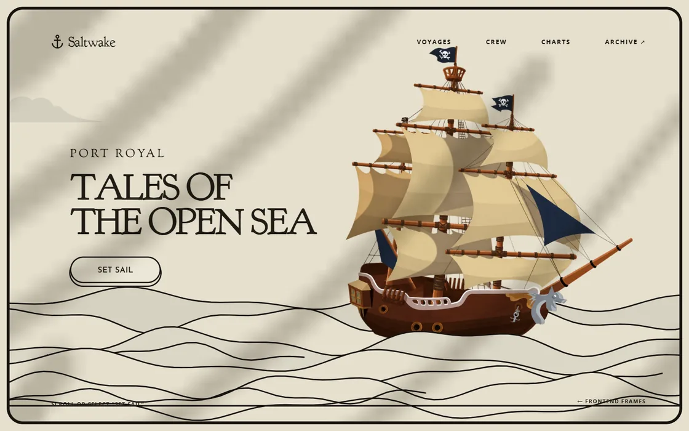
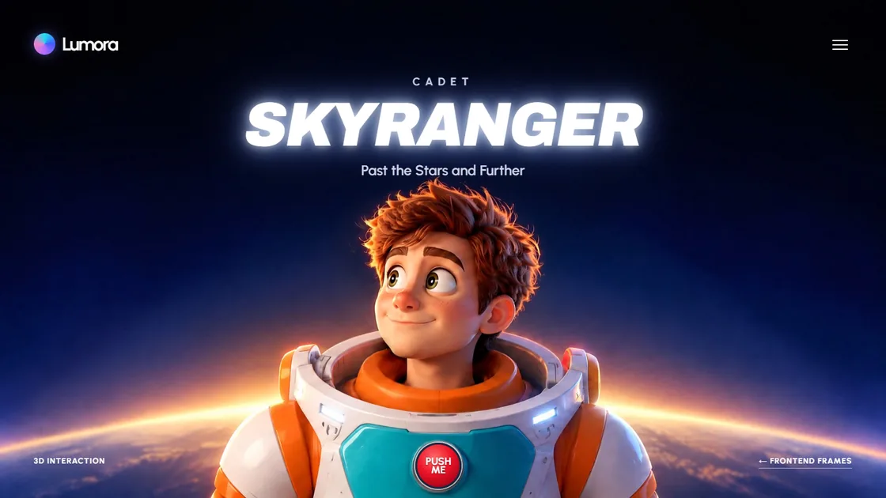
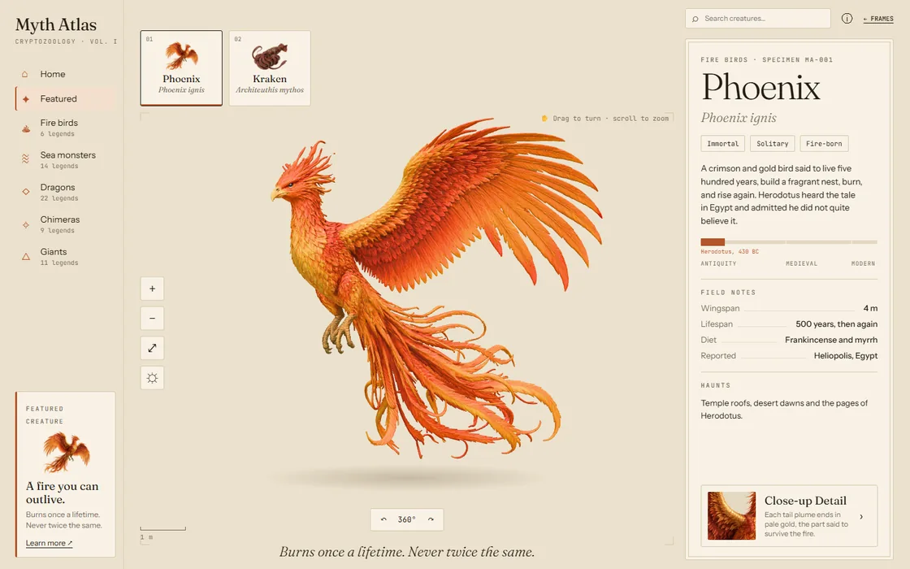
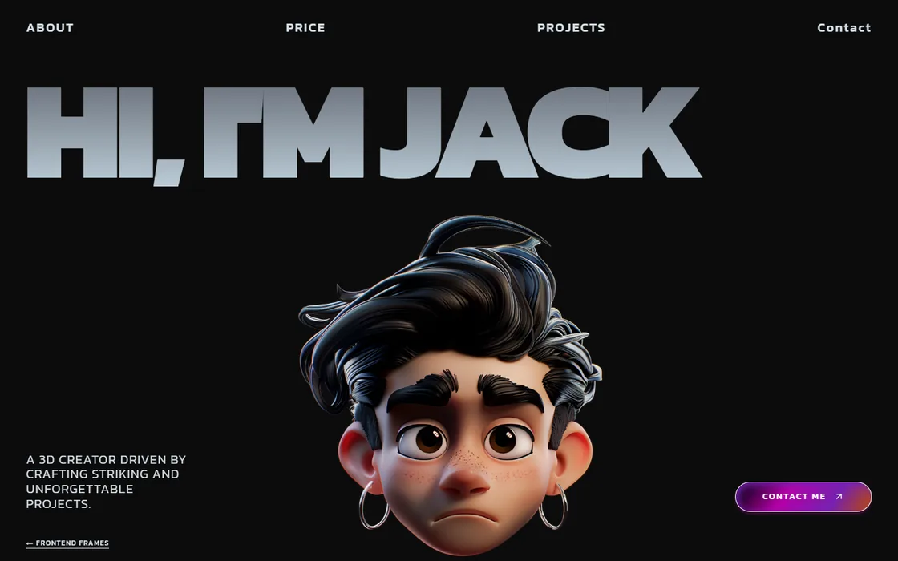
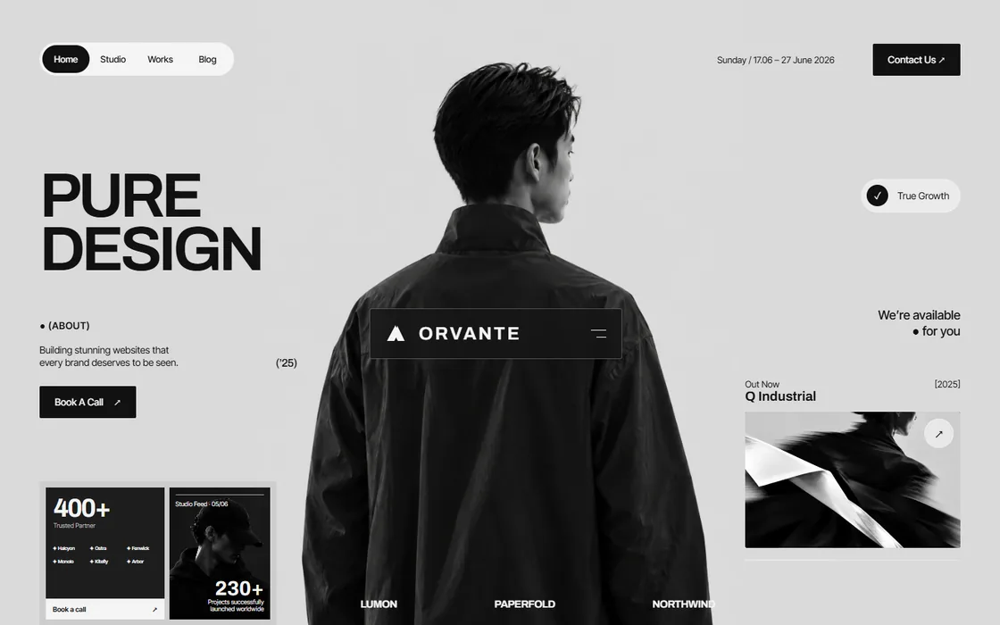
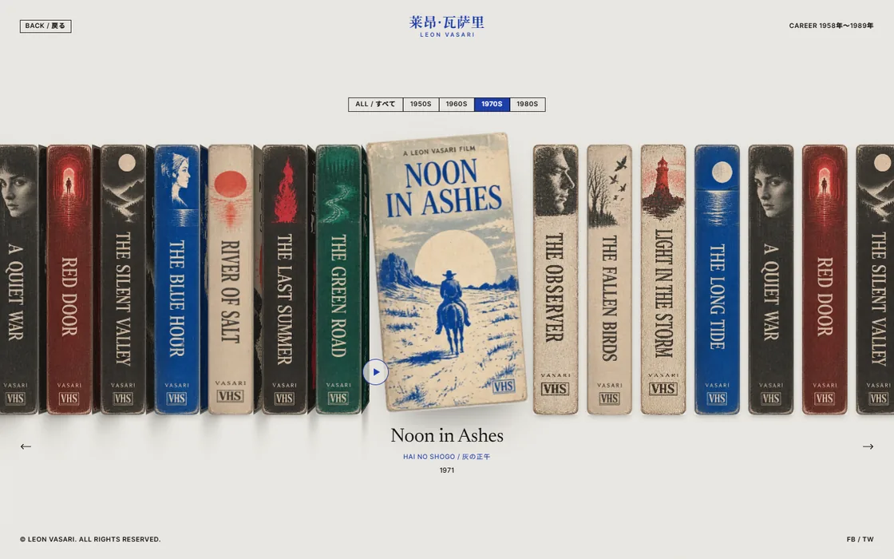
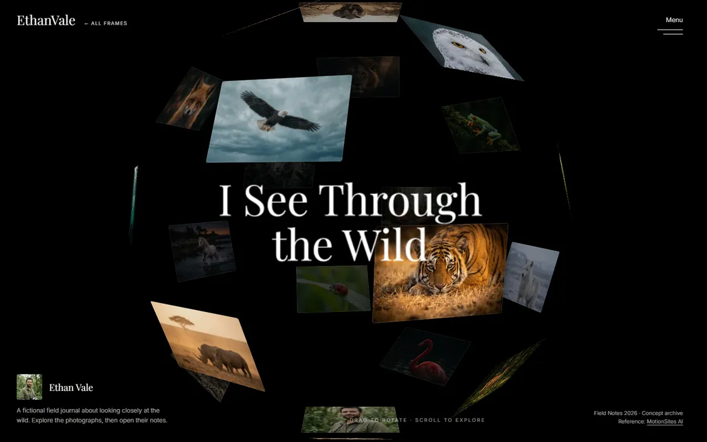
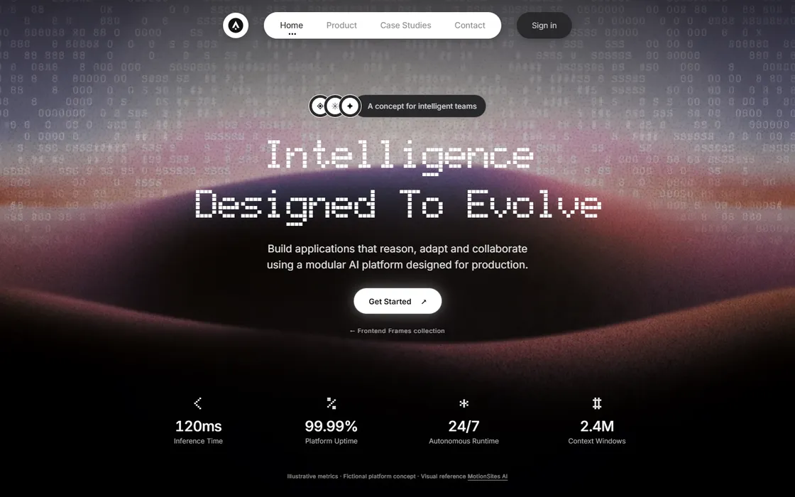

01 / Cover storyIllustrated voyage

Interactive / Two scenes
Saltwake
A storybook pirate voyage. Set sail, watch the water rise, and meet the crew beyond the horizon.
Design studies · Interactive experiments · Copyable recreation briefs
01 / The collection
From a paper sea and a living myth to a wildlife archive and an AI runtime, every frame has its own scene, controls, and story.

Interactive / Two scenes
A storybook pirate voyage. Set sail, watch the water rise, and meet the crew beyond the horizon.

3D illusion / Motion
A cadet follows your gaze. Press the suit button to lower a glass helmet.

3D / Specimen viewer
Turn a phoenix in your hands, switch to a kraken, and read a mythical field guide.

React / Portfolio
Meet Jack through oversized type, sculptural imagery, a moving reel, and stacked project studies.

Editorial / Branding
A restrained monochrome studio, where big type and a moving manifesto carry the story.

Film / Interactive archive
A shelf of fictional films on VHS. Pull out a tape, turn its cover, and open the story behind it.

Photography / Interactive archive
Rotate a constellation of wildlife images, switch to a quiet grid, and open the story behind each frame.

AI / Motion
A cinematic single-screen platform concept, with a full-bleed film, luminous type, and compact interface controls.